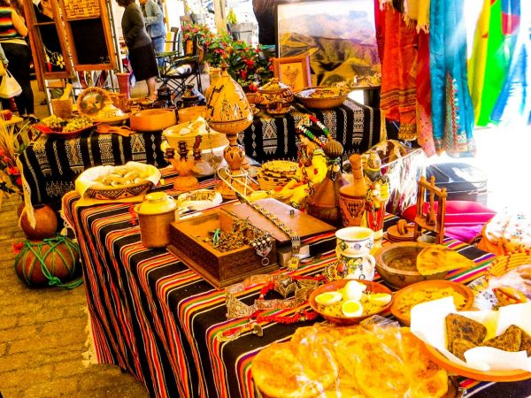
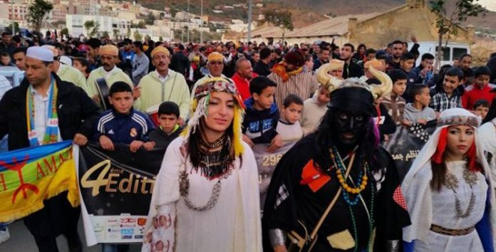

Traditions et mode de vie des
Amazighs :
Les Amazighs, peuple autochtone d’Afrique du Nord, ont une culture riche qui se
manifeste à travers leurs traditions, leur mode de vie et leur lien profond avec la
nature. Cet article explore les pratiques ancestrales amazighes et leur évolution au
fil du temps, en mettant en lumière leur pertinence dans le monde moderne.
Le rôle central des cérémonies et festivités
Les cérémonies et festivités occupent une place prépondérante dans la
culture amazighe, notamment les mariages, les rites de passage et les célébrations saisonnières. 
Artisanat : Un savoir-faire intemporel
L’artisanat amazigh est bien plus qu’un simple métier : c’est un mode d’expression culturelle.
Une agriculture en harmonie avec la nature
L’agriculture a toujours été au cœur du mode de vie amazigh. Basée sur des techniques durables transmises de génération en génération, elle reflète un profond respect pour l’environnement. Les terrasses cultivées dans les montagnes, l’irrigation traditionnelle et les plantations d’oliviers et d’amandiers montrent comment les Amazighs vivent en harmonie avec leur milieu naturel.
Évolution et persistance dans le monde moderne
Malgré les défis de la modernisation, les Amazighs ont su préserver
l’essence de leurs traditions tout en s’adaptant. Aujourd’hui, leurs festivals attirent des visiteurs du monde
entier, et leur artisanat est reconnu comme un patrimoine précieux. La langue tamazight, autrefois marginalisée,
connaît un renouveau grâce à son intégration dans les systèmes éducatifs et médiatiques.
